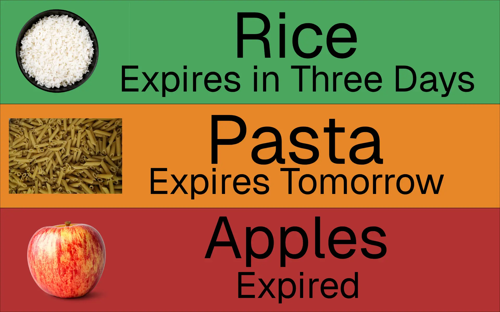

01
Food Waste Prevention Application
This is a mobile application designed to simplify household food tracking through visual organisation, expiration monitoring and streamlined interaction design.
Android Studio, Kotlin, Database Design, API Integration
View Project